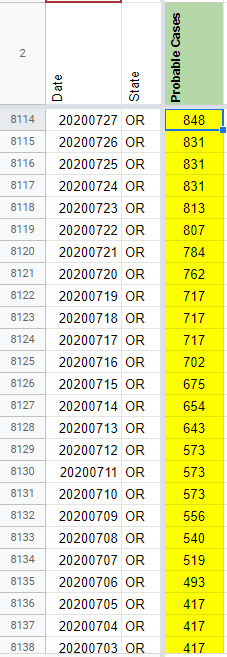
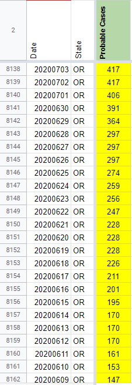
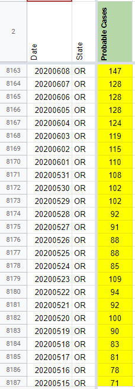
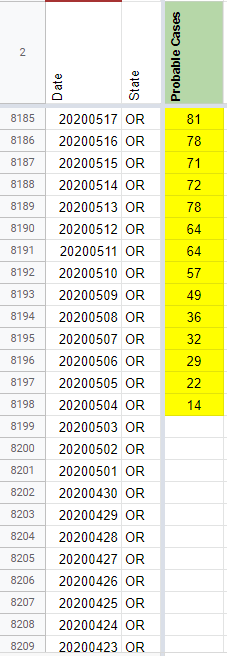
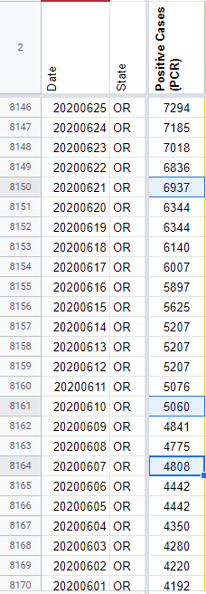
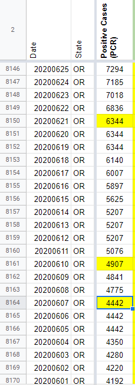
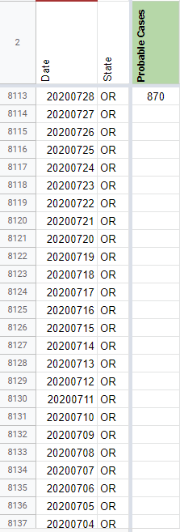
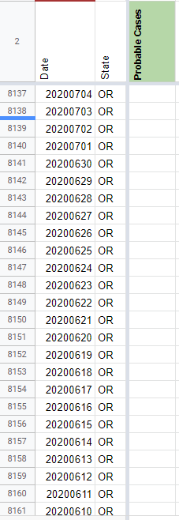
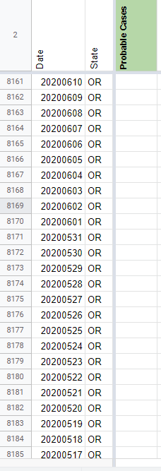
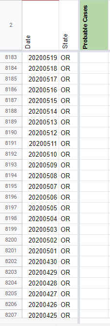

[OR] Probables backfill 5/4 - 7/27 and fixing confirmed case values 6/7, 6/10, 6/21
Issue number 854
the-daniel-lin opened this issue on September 21, 2020 at 4:52 pm
Labels Data quality Historical Data Backfill
State or US: Oregon Describe the problem Oregon began to release total (“Total Cases”) and confirmed (“Positive Tests”) case values on 5/4. On 7/28, CTP began using a total - confirmed calculation to record probable values. We need to backfill these probable values back through 5/4, when OR first released confirmed/total values.
Beginning 6/6, Oregon does not update the confirmed values on their dashboard on weekends, so for those days, we carry over confirmed/probable values. Prior to 6/6, however, Oregon did provide consistent updates on their dashboard through the weekend, so we will not carry over those weekend values. On 7/3 and 9/7, OR did not update their dashboard, so we are carrying over values for those weekdays.
There are errors in Positive Cases (PCR) on 6/7, 6/10, and 6/21. On 6/7 and 6/21, Data Entry recorded the total case value in the Positive Cases (PCR) confirmed column as well. As these are unupdated weekend values, we should change these to the respective carried over values, from 4808 and 6937 to 4442 and 6344. On 6/10, Data Entry did not record the confirmed case value and only recorded the total cases value. We should change this to reflect the screen-captured value, from 5060 to 4907.
Link to data source Using Total-Confirmed calculation and spot checking with screenshots.
{kind=link}
Comments
Probables AFTER:    
Backfilled values:
848 831 831 831 813 807 784 762 717 717 717 702 675 654 643 573 573 573 556 540 519 493 417 417 417 417 406 391 364 297 297 297 274 259 256 247 228 228 228 226 211 201 195 170 170 170 161 153 147 147 128 128 128 124 119 115 110 108 102 102 92 91 88 88 85 109 94 92 100 90 83 81 78 71 72 78 64 64 57 49 36 32 29 22 14
6/7, 6/10, 6/21 Confirmed Cases BEFORE: 
6/7, 6/10, 6/21 Confirmed Cases AFTER: 
Probables BEFORE:    